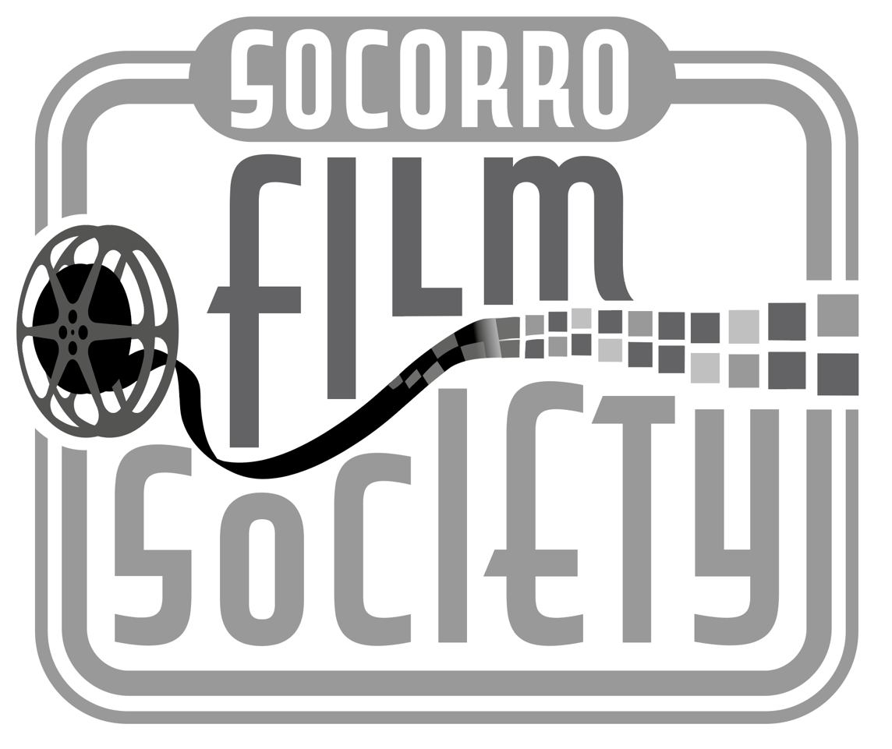

Next showing:
See you there!
- When
- Where
- Loma Theater
107 Manzanares Ave
Socorro, New Mexico 87801 - Poster
- Download PDF Flyer
About Us
Socorro Film Society is a non-profit group based in Socorro, NM. We watch good films and then have informal discussions about them.
Admission is free, although we suggest a donation of $3 to cover expenses.
For more information, please reach out to Daniel Lyons.